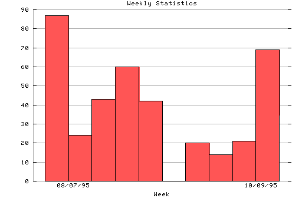

HTTP Server Weekly Statistics
Covers: 08/07/95 to 10/14/95 (69 days).
All dates are in local time.
Week of 08/07/95: 87 : ## Week of 08/14/95: 24 : Week of 08/21/95: 43 : # Week of 08/28/95: 60 : # Week of 09/04/95: 42 : # Week of 09/18/95: 20 : Week of 09/25/95: 14 : Week of 10/02/95: 21 : Week of 10/09/95: 69 : #

Statistics generated at Mon Oct 16 10:19:51 MET 1995, (C) Oslonett AS, 1995.